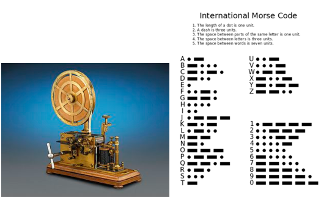

Cryptography
Introduction · History · Examples
Introduction
The word “cryptography” is from Greek words kryptós (hidden) and gráphein (writing). It is a study of mathematical techniques for secure communication, which is using “hidden writing” to keep information secret. Using a simple example, we decide a set of secret code between us and no other people know how it works, and the secret code is the ‘key’. Then I encrypt the massage and pass to you. You can easily use the ‘key’ to decrypt the message, but other people are not able to know the original message.
History
Early Cryptography
About 4000 years ago, a number of unusual symbols were written on the tomb of nobleman KHNUMHOTEP II. It is known as the oldest text contained a modification of the text, which is one of cryptography’s components.
In 1900BC, the first known use of cryptography appeared in Egypt. It was found carved into the wall of a tomb from the Old Kingdom of Egypt circa.
In 5th century BC, a society called SPARTANS sent and received secret messages using a cylinder cryptographic device. The device, called a SCYTALE, was only owned by the sender and the recipient of the message. The message was written across a narrow strip and wound around the cylinder. Only a same size of SCYTALE was used to re-wound it then people can get the information written.
A SCYTALE (from Wikipedia)
From 60-50BC, JULIUS CAESAR developed a method, called Caesar cipher, to encrypt message by a shift of three letters. Caesar was the first recorded person to use this kind of method. However, it is believed other substitution ciphers had been used before.
In 1466, an essay written by an Italian LEON BATTISTA ALBERTI described building a cipher disk and founding the idea of POLY ALPHABETIC ciphers. However he did not develop his concept and left it to others. A French cryptographer BLAISE DE VIGENERE developed the the VIGENERE SQUARE based on a practical poly alphabetic system. At the time, it was believed the VIGENERE SQUARE was unbreakable.

LEON BATTISTA ALBERTI (left) and BLAISE DE VIGENERE(right)(From Wikipedia)
Modern Cryptography
In the 1840s Edgar Allan Poe solved many ciphers using systematic methods. Alexander's Weekly (Express) Messenger, a Philadelphia paper, noticed his abilities and he created a public stir successfully.
Probably until 1854, CHARLES BABBAGE found a way to decrypt encrypted message successfully by developing the method of statistical using the Vigenere square. However because he did not publish his result, this fact was not discovered until the 20th century.
BLAISE DE VIGENERE (1791-1871)(From Wikipedia)
In 1863, a German FRIEDRICH WILHELM KASISKI published a book on cryptography and break Vigenere by using a method of analysis gaps in the encrypted messages.
Apart from that, beginning in 1836, an electrical telegraph system was developed. Around 1837, Morse developed a forerunner of the modern International Morse code which can be use to transmit natural language using in the telegraph system. The Morse code uses different numbers of dots and dashes to represent different letters. The Morse code was used widely in WWI and WWII, especially between the warships and the naval bases.
Morse code receiver, recording on paper tape and International Morse Code (from wikipedia)
In WWI, a cipher called ADFGVX cipher was used in Germany army. This cipher only uses A, D, F, G, V and X to encrypt message, and was named by those six letters. Those six letters were chosen because of their differences in the Morse code. Here is a website can encrypt message using ADFGVX cipher.
ADFGVX encryption table
In 1920s, a encryption machine called Enigma was developed by the German engineer Arthur Scherbius and then was widely used by Germen armed forces in WWII. It uses a set of rotors to do random encryption. It was known as “unbreakable”. However, due to its cryptographic weaknesses and operator mistakes, Allied cryptologists break it successfully. It is believed decryption of Enigma is important for the victory of Allied.
Military Enigma machine(From Wikipedia)
World War II - Mind of a Code Breaker
Examples
- Substitution Ciphers

This method is a substitution of original message’s letters to other form. Caesar Cipher is a typical substitution cipher. It shifts the letters of original message. If you want to try a Caesar cipher encryption, click here.
However, in each language several letters have larger frequency to be used. Therefore an analysis of frequency can easily break this kind of ciphers. You can learn more about frequency analysis from Cryptanalysis.
- The Vigenère Square
- The Enigma
- Key Crypto